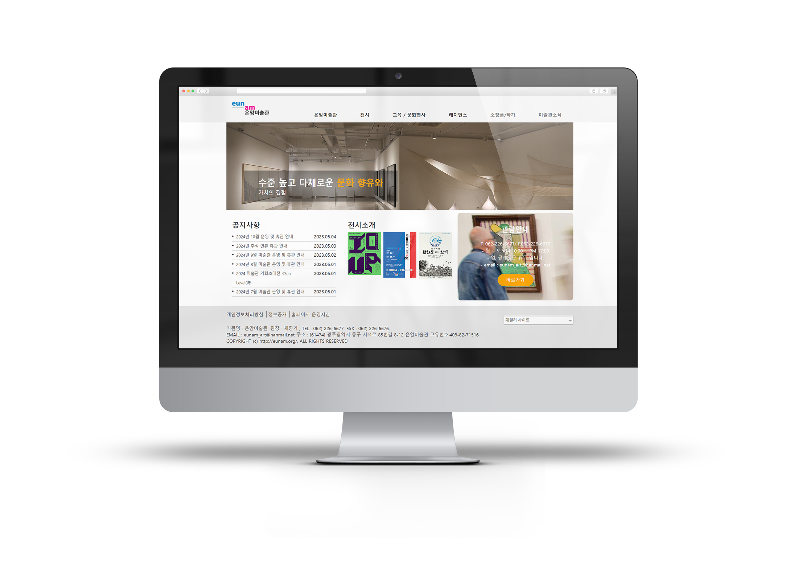
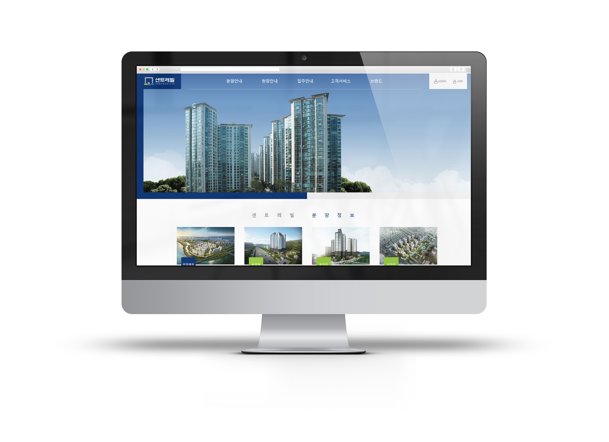
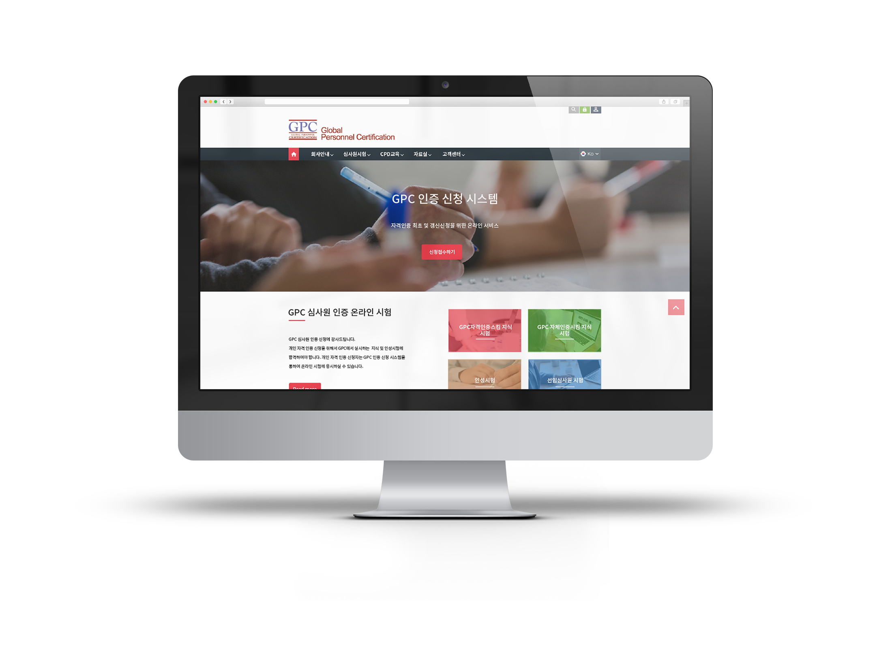

Main Page
 한솔테코 (포트폴리오)
한솔테코 (포트폴리오)
기존 사이트에서 반응형을 추가하여,
불편함 점을 찾아 개선하였고,
카피 사이트를 제작하였습니다.
사용 툴 : Photoshop, Visual Studio Code
Main Page

은암미술관 (포트폴리오)
기존 사이트에서 반응형을 추가하여,
기존 사이트의 정보성과 콘텐츠를 개선하여
사용자들이 필요한 정보를 쉽게 찾고 접근할 수 있도록
직관적인 구조로 재설계하였습니다.
사용 툴 : Photoshop, Visual Studio Code
Main Page

동부센트레빌 홈페이지 (포트폴리오)
기존 사이트에서 반응형 페이지가 될 수 있도록
카피 사이트를 새롭게 제작하였습니다
사용 툴 : Photoshop, Visual Studio Code
Main Page
 IGC 아카데미
IGC 아카데미
IGC 아카데미의 웹사이트 100% 디자인 전반을 맡아
교육 기관의 특성을 고려해 직관적이고 접근성이 뛰어난 사용자 인터페이스를 설계하였습니다.
사용 툴 : Photoshop, Visual Studio Code
Main Page

GPC인증신청 시스템
GPC인증신청 시스템의 웹사이트 100% 디자인 전반을 맡아
교육 기관의 특성을 고려해 직관적이고 접근성이 뛰어난 사용자 인터페이스를 설계하였습니다.
사용 툴 : Photoshop, Visual Studio Code